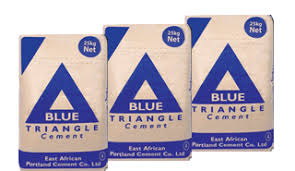

Bamburi Cement
Accounts for 32.6 percent of cement market share in Kenya. It's regular brand Nguvu costs Ksh 700 for a 50kg bag

Cement is a water-based binder used to bind other building materials together. It is used in the production of mortar and concrete during the construction process. Cement has replaced all other building materials, like clay and lime, which ruled high for hundreds of years, in construction from last century. It has an ability to hold the structure together.
Accounts for 32.6 percent of cement market share in Kenya. It's regular brand Nguvu costs Ksh 700 for a 50kg bag
Accounts for 15.8 percent of cement sold in Kenya. It's regular brand Nyumba costs Ksh 570 for a 50kg bag
Accounts for 15.1 percent of cement sold in Kenya. It's regular brand Blue Triangle costs Ksh 540 for a 50kg bag
Accounts for 15.0 percent of cement sold in Kenya. It's regular brand Savannah costs Ksh 660 for a 50kg bag

Accounts for 13.5 percent of cement sold in Kenya. It's regular brand Blue Triangle costs Ksh 670 for a 50kg bag

Accounts for 12.5 percent of cement sold in Kenya. It's regular brand Simba costs Ksh 700 for a 50kg bag